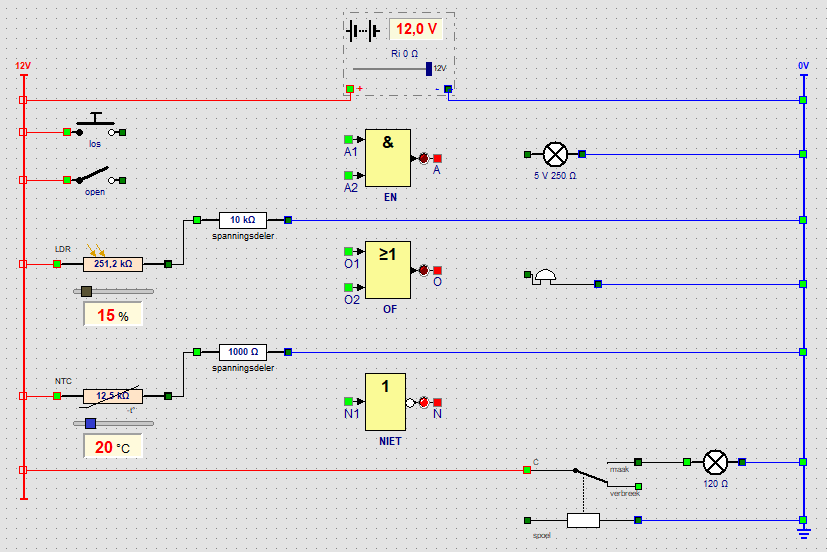
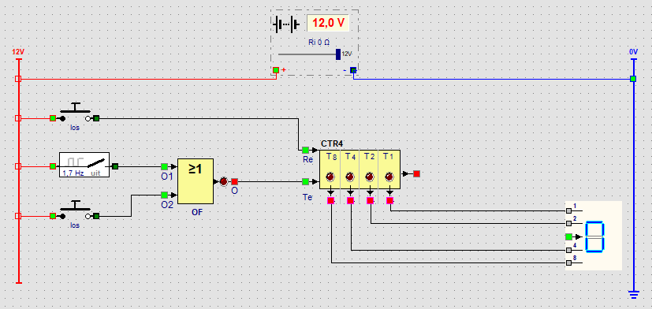

The panel is the work area on which you build the circuit. It has a grid,
rulers and a title, and you can save it and open it again later.
Grid and rulers
The grid helps you line up components neatly. While you drag an object it snaps magnetically
to the rulers, so components easily end up in line.
Button
Name
What does it do?
Grid
Shows or hides the grid. More options (colour, spacing) are in Settings.
Guide lines
Helper lines through the centre of the object while you drag it.
Frame
Draws a frame around object(s). See below.
Change title
Asks for a new title for the panel.
Bar Input / Processing / Output
Shows or hides the coloured bar at the top of the panel. Without the bar, the title, rulers and work area move up a little; the components stay where they are. This is saved per panel. Whether a new panel shows the bar is set in Settings > General (off by default).
Frames
A frame groups components that belong together, for example “Inputs” or
“Counter”. A frame has a caption and a colour.
Click Frame.
Drag a rectangle on the panel around the object(s).
Afterwards you can drag the frame and resize it with the grips on the corners.
Right-click a frame for its menu:
Menu item
What does it do?
Change caption
Gives the frame a different caption.
Color blue / red / green
Changes the colour of the border.
Delete frame
Deletes the frame. The components inside it stay.
Panel choice
With Panel choice you start a new panel.
The current panel is cleared; save it first if you want to keep it.
The three example panels are built like a real circuit: a 12 V
source at the top, a red + rail on the left, a blue − rail on the right, and
between them components with terminals, connected by wires. All components
are in the level Basic.
New standard panel
An empty panel to build your own circuit.
Decision panel
A practice panel for making a decision with logic gates. Ready on the panel are:
inputs (left): a push button, a switch, an LDR (light sensor) with a
10 kΩ resistor and an NTC (heat sensor) with a
1000 Ω resistor;
outputs (right): a 5 V lamp, a buzzer and a
relay whose NO contact switches a 12 V lamp.

The Decision panel when it opens: everything is already connected to the + and the −, but no wire runs to the gates yet.
Already wired is everything that goes to the + and the −:
the + rail goes to the left terminal of the push button, the switch, the LDR and the NTC;
each sensor goes through its resistor to the − rail: together they form a
voltage divider;
the right terminal of the 5 V lamp, of the buzzer and of the relay coil goes to the − rail;
contact C of the relay is on the + rail, the NO contact on the 12 V lamp, and that lamp on the
− rail.
The gates need no wire to the + or the −: they get their power
invisibly.
You lay the signal wires (see Connections): from an input component to the
input of a gate, and from the output of a gate to an output component.
At the push button and the switch the wire starts at the right terminal.
At a sensor it also starts at the right terminal, between the sensor and its resistor. Two wires then meet there.
Connect the output of a gate to the left terminal of the 5 V lamp, the buzzer or the relay coil.
An example: the buzzer sounds when it is warm and the switch is on.
Draw a wire from the right terminal of the NTC to input A1 of the AND gate.
Draw a wire from the right terminal of the switch to input A2.
Draw a wire from output A of the AND gate to the left terminal of the buzzer.
Start the simulation, click the lever of the switch and drag the slider under the NTC to 60 °C:
the buzzer sounds. At 20 °C, or with the switch open, it is silent.
You change the light or the temperature with the slider under the sensor: drag the knob, or click beside it for
one step (1 % light or 1 °C). This also works during the simulation.
Two more to try:
A night light: the LDR to input N1 of the NOT gate, output N to the 5 V lamp. The lamp
lights when it is dark (15 % light) and goes out at 80 % light. See also lesson 6.
Switching a big appliance: the push button to input O1 of the OR gate, output O to the relay
coil. As long as you press, the relay pulls in and the 12 V lamp lights. See also
lesson 7.
Counter panel
A working example of a counter. All wires are already in place: the panel
works at once.

The Counter panel: the pulse generator and the bottom push button go through an OR gate to the count input Te; the top push button resets the counter to 0.
The + rail goes to the left terminal of the two push buttons and of the
pulse generator.
The pulse generator goes to input O1 of an OR gate, the bottom
push button to O2. The output of the OR gate goes to the count input Te: the counter counts the pulses of
the generator or each press of the button.
The top push button goes to Re: it resets the counter to 0.
The outputs T8, T4, T2 and T1 of the counter go with four wires to the inputs
8, 4, 2 and 1 of the 7-segment display, which shows the count.
The display has no terminals: it is plugged in on the − rail.
Start the simulation and press the bottom push button a few times: the counter goes one further each time. Then
click the box of the pulse generator: it switches to on and the counter runs by itself. Click again to
stop, and press the top push button to start again at 0. More explanation is in
lesson 8.
Memory panel
A working example of a memory, the same circuit as in
lesson 9. Here too all wires are already in place.
The counter at the top chooses the address. The top push button (on Re)
resets the address to 0, the second (on Te) goes one address further. The switch below them (on A16)
adds 16: that takes you to the addresses 16 to 31.
The DIP switch sets a number from 0 to 15 on the data inputs
D8, D4, D2 and D1. When the panel opens it is set to 5.
The bottom push button (on S, write) stores that number in the chosen address.
The top display shows the address, the bottom one the content of that address. Both displays are
plugged in on the − rail.
Start the simulation. Click the sliders of the DIP switch to choose a number and press the bottom push
button to store it. Then go one address further with the second push button and back to 0 with the top one:
the number is still there.
Open and save
Button
Name
What does it do?
Save panel
Saves all components, wires and their settings in a .lpl file. By default in the panels folder next to the program.
Open panel
Loads a saved panel. The current panel is replaced.
Screen copy
Copies a picture of the panel to the clipboard.
After opening or saving, the file name is shown as the title above the panel. If you change something
afterwards, the title gets an asterisk (for example beslissen *). If you then open another panel,
choose a built-in panel or close Logic, Logic first asks whether to save the changes
(Yes, No or Cancel).


 Panel choice you start a new panel.
The current panel is cleared; save it first if you want to keep it.
Panel choice you start a new panel.
The current panel is cleared; save it first if you want to keep it.